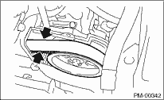
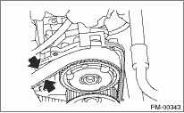

PERIODIC MAINTENANCE SERVICES > Timing Belt
1. Remove the front timing belt cover and timing belt cover (LH).
2. While cranking engine at least four rotations, check the timing belt back surface for cracks or damage. Replace the faulty timing belt as needed.
3. When the side part of timing belt (surface indicated by the arrow in the figure) is abnormally worn (has fluff or jumping out of core) or damaged, check the idlers, tensioner, water pump pulley and cam sprocket for the idler alignment (squareness). Replace the worn or damaged timing belt.

4. Install the front timing belt cover and timing belt cover (LH).
1. Remove the timing belt cover (LH).
2. While cranking engine at least four rotations, check the timing belt back surface for cracks or damage. Replace the faulty timing belt as needed.
3. When the side part of timing belt (surface indicated by the arrow in the figure) is abnormal worn (has fluff or jumping out of core) or damaged, check the idlers, tensioner, water pump pulley and cam sprocket for the idler alignment (squareness). Replace the worn or damaged timing belt.

4. Install the timing belt cover (LH).